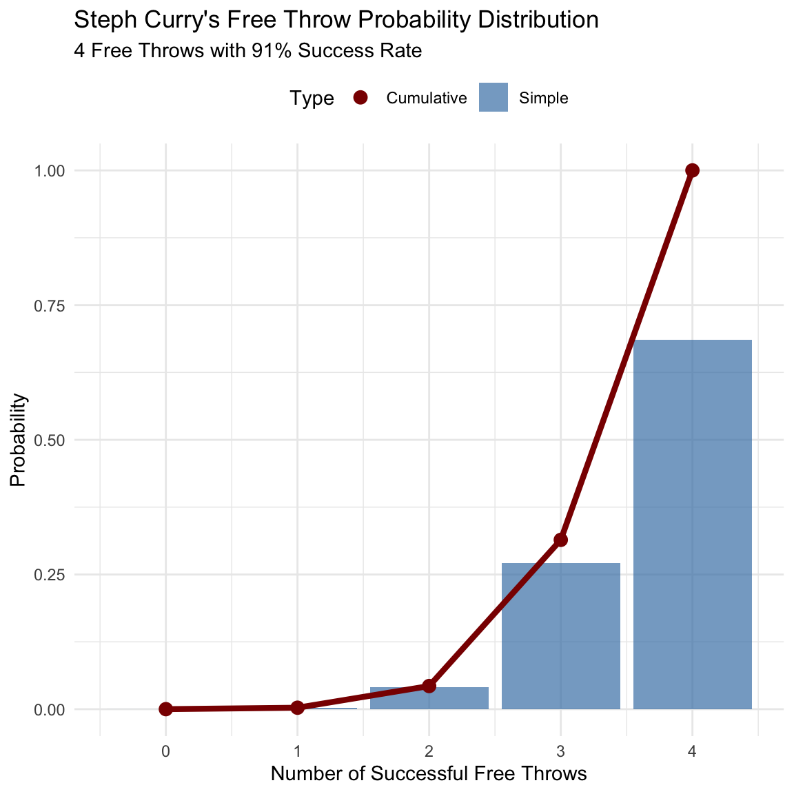

# Create example distributionsx<-seq(-4, 4, length.out =100)normal_df<-data.frame( x =x, y =dnorm(x), type ="Normal")x<-0:10poisson_df<-data.frame( x =x, y =dpois(x, lambda =3), type ="Poisson")colors<-c("Normal"="blue","Poisson"="red")# Plot distributionsggplot()+geom_line(data =normal_df, aes(x =x, y =y, color ="Normal"), size =1)+geom_point( data =poisson_df,aes(x =x, y =y, color ="Poisson"), size =1.5)+labs( title ="Example Distributions", x ="Value", y ="Probability", color ="Legend")+theme(legend.position ="top")+scale_color_manual(values =colors)+theme_minimal()
A probability distribution describes the probability of all of the possible outcomes in an experiment. Throughout this section we will encounter a number of these probability distributions, each of which is appropriate to describe different types of data.
The Binomial Distribution
Properties:
Independent trials
Two outcomes
Fixed probability
Order doesn’t matter
Formula:
P(k; n,p) = \binom{n}{k} p^k(1-p)^{n-k}
Where:
k = successes
n = trials
p = probability per trial
Binomial Coefficient:
\binom{n}{k} = \frac{n!}{k!(n-k)!}
Code
# Create binomial distribution plotx<-0:10n<-10p<-0.5binom_df<-data.frame( x =x, y =dbinom(x, size =n, prob =p))
The binomial distribution provides a way to compute the probability of some number of successes out of a number of trials on which there is either success or failure and nothing in between (known as “Bernoulli trials”), given some known probability of success on each trial.
Example: Steph Curry’s Free Throws
Scenario:
Steph Curry hits 91% of his free throws
In a game in Jan, 2018, he hit only 2 out of 4 free throws
It seems pretty unlikely that he would hit only 50% of his free throws in a game, but exactly how unlikely is it?
Calculation:
P(2;4,0.91) = \binom{4}{2} 0.91^2(1-0.91)^{2}
= 6 * 0.8281 * 0.0081
= 0.040
Interpretation:
Very unlikely (4%)
Yet it happened
Rare events do occur
Don’t overinterpret
On Jan 20 2018, the basketball player Steph Curry hit only 2 out of 4 free throws in a game against the Houston Rockets. We know that Curry’s overall probability of hitting free throws across the entire season was 0.91, so it seems pretty unlikely that he would hit only 50% of his free throws in a game, but exactly how unlikely is it?
Cumulative Distributions
Often we want to know not just how likely a specific value is, but how likely it is to find a value that is as extreme or more than a particular value?
Definition:
Probability of value ≤ x
Accumulates probabilities
Often more useful
Important for testing
Example:
P(k\le2)= P(k=2) + P(k=1) + P(k=0)
Often we want to know not just how likely a specific value is, but how likely it is to find a value that is as extreme or more than a particular value?
Cumulative Distributions
Code
# curry_df <- tibble(# numSuccesses = seq(0, 4)# ) %>%# mutate(# Probability = dbinom(numSuccesses, size = 4, prob = 0.91),# CumulativeProbability = pbinom(numSuccesses, size = 4, prob = 0.91)# )# Create data for Curry's free throw distributionsn_throws<-4curry_prob<-0.91x<-0:n_throwscurry_dist_df<-data.frame( x =x, Simple =dbinom(x, size =n_throws, prob =curry_prob), Cumulative =pbinom(x, size =n_throws, prob =curry_prob))kable(curry_dist_df, caption ="Simple and cumulative probability distributions", digits =3)
Simple and cumulative probability distributions
x
Simple
Cumulative
0
0.000
0.000
1
0.003
0.003
2
0.040
0.043
3
0.271
0.314
4
0.686
1.000

The binomial distribution is a discrete probability distribution that describes the number of successes in a sequence of independent experiments, each of which has a constant probability of success. In this example, we are looking at the probability of Steph Curry making a certain number of free throws out of 4 attempts, given that his overall success rate is 91%.
This visualization shows both the probability of making exactly k free throws (blue bars) and the probability of making k or fewer free throws (red line) for Curry’s specific scenario of 4 attempts with a 91% success rate.
Summary
Core Concepts:
Probability measures uncertainty
Three approaches:
Personal belief
Empirical frequency
Classical probability
Fundamental rules:
Addition
Multiplication
Subtraction
Advanced Topics:
Conditional probability
Independence
Bayes’ rule
Probability distributions
Applications:
Medical screening
Data analysis
Decision making
Statistical inference
These concepts form the foundation for statistical inference, which we will explore in later chapters. Having read this chapter, you should be able to:
Describe the sample space for a selected random experiment
Compute relative frequency and empirical probability
Compute probabilities of single events, complementary events, and unions/intersections
Describe the law of large numbers
Understand conditional probability and independence